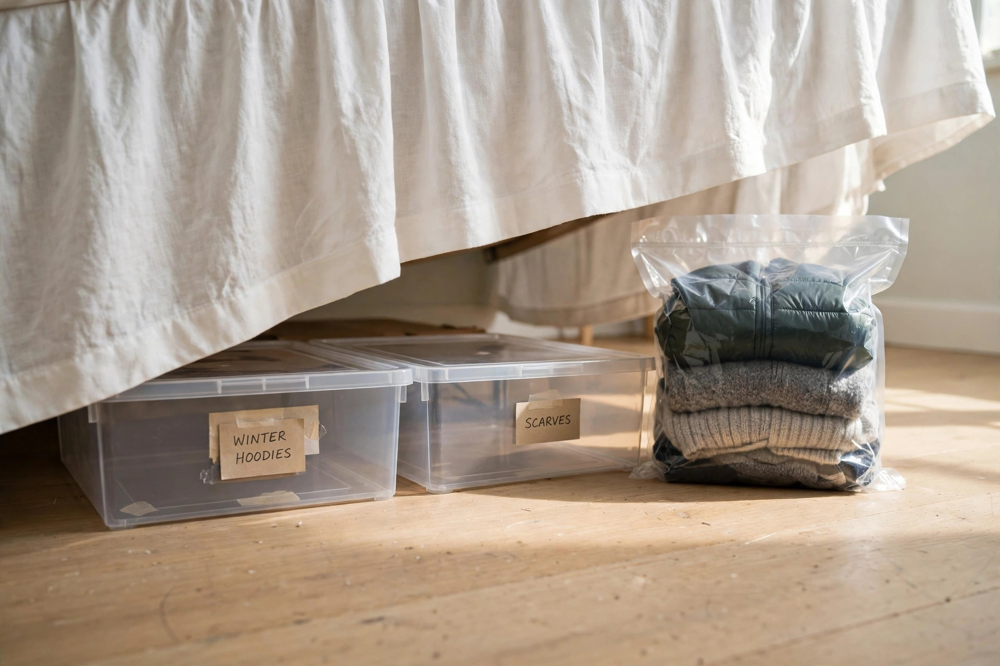
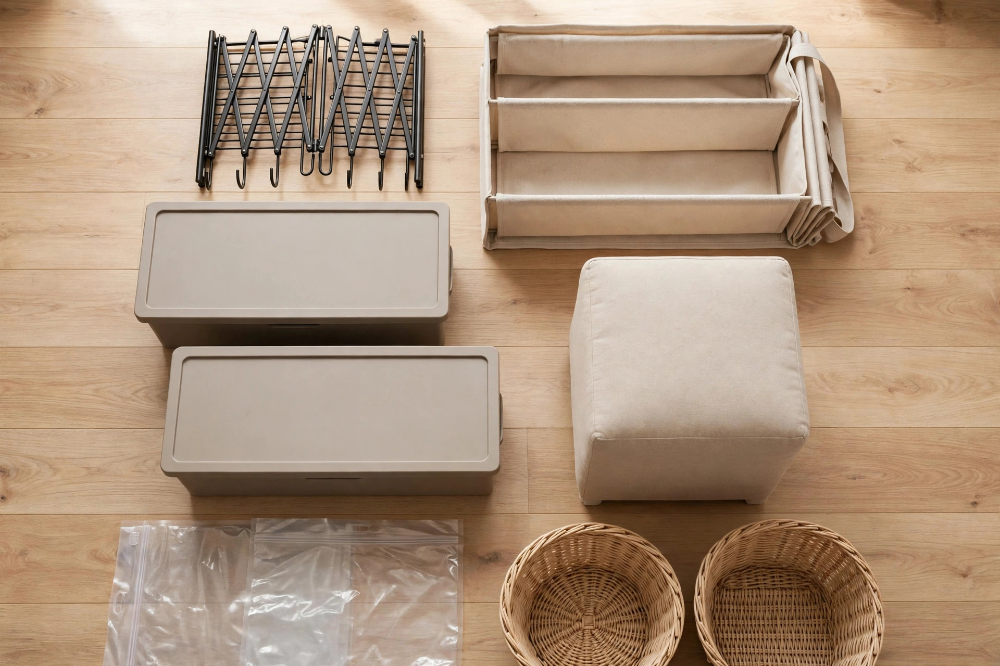

Small Bedroom
Small Bedroom Storage Ideas Under $100
Intro
Small bedroom mein problem jagah ki kami nahi hoti — problem ye hoti hai ke har cheez ke liye jagah tay nahi hoti. Kapde, shoes, books, chargers, extra bedding — sab kuch ek hi chhoti si room mein fit karna hai, aur wo bhi bina room ko store-room jaisa banaye.
Is guide mein 15 storage ideas hain, aur poora plan $100 ke andar rehta hai. Har idea ke saath rough price diya hai, taaki aap apne budget ke hisaab se 3–4 ideas aaj hi pick kar sakein. Zyada tar ideas renter-friendly hain — no drilling, no permanent change.

1. Bed ke neeche flat boxes — $15–$25
Bed ke neeche ki jagah sab se badi wasted space hai. Flat, clear boxes mein off-season kapde, extra bedding ya shoes rakhein. Label laga dein taaki dhoondhna asaan ho. Bed skirt se boxes chhup jayenge.

2. Ek storage ottoman, foot of the bed — $25–$35
Ye ek cheez teen kaam karti hai: baithne ki jagah, blanket store karna, aur room ko finished look dena. Is mein wohi cheezein rakhein jo roz chahiye hoti hain — extra throw, book, charger.
3. Door ke peeche over-the-door rack — $10–$15
Bathroom door ya bedroom door ke peeche ek rack lagayein. Is par bags, scarves, belts, ya kal ke kapde hang karein. Ye jagah waise bhi khaali rehti hai, aur is se wardrobe par bojh kam hota hai.
4. Wardrobe mein ek hanging shelf — $8–$12
Wardrobe ki ek shelf ko 2–3 hisson mein baantne ke liye hanging fabric shelf use karein. T-shirts, jeans ya folded kapde alag-alag khano mein rakhein. Is se ek shelf ki capacity lagbhag double ho jati hai.
5. Slim shoe rack, bed ke side mein — $12–$18
Bara shoe cabinet ki jagah ek slim, 2-tier rack lein jo deewar se chipka ho. Sirf roz pehne jane wale 3–4 pairs bahar rakhein, baaki bed ke neeche wale boxes mein.
6. Bedside table ki jagah floating shelf — $10–$15
Ek chhoti floating shelf + ek chhota basket: phone, book aur paani ki bottle ke liye kaafi hai. Floor par table na hone se room khula lagta hai aur safai bhi asaan hoti hai. Renter hain to adhesive hooks wali shelf bhi try kar sakte hain.
7. Vacuum bags for seasonal clothes — $8–$12
Sardi ke heavy jackets ya extra blankets ko vacuum bags mein daal kar bed ke neeche ya wardrobe ke upar rakhein. Ye aadhi jagah lete hain, aur kapde dust se bhi bachte hain.
8. Ek pegboard ya hook strip — $10–$15
Ek chhoti pegboard ya 5-hook strip bed ke paas ya wardrobe ke side par lagayein. Hats, bags, jewellery ya kal ke outfit ke liye. Har cheez nazar aaye to subah jaldi tayyar hona asaan hota hai.
9. Under-bed rolling drawer, DIY — $0–$10
Purana shallow box ya ek purani drawer lein, us ke neeche 4 chhote wheels lagayein. Ab ye ek rolling drawer hai — shoes, books ya craft cheezein is mein rakhein. Ye sab se sasta aur useful DIY hai.
10. Top of wardrobe ko use karein — $5–$10 (boxes)
Wardrobe ke upar wali jagah par matching boxes ya baskets rakhein. Jo cheezein kam use hoti hain — travel bag, extra sheets, gift wrap — wahan rakhein. Matching boxes se ye clutter nahi, organised lagta hai.
11. Nightstand ke andar "one in, one out"
Ye kharch nahi, aadat hai. Nightstand ki drawer mein sirf 5 cheezein rakhein. Nayi cheez andar aaye to purani bahar nikalein. Chhoti jagah mein ye rule hi sab se zyada farq dalta hai.
12. Behind-the-bed narrow shelf — $12–$20
Bed aur deewar ke beech agar 10–15 cm jagah hai, to ek narrow shelf ya ek slim bookcase wahan fit ho jati hai. Books, phone charger aur ek chhoti lamp — sab kuch haath ke paas, floor par kuch nahi.
13. Laundry basket jo furniture jaisa lage — $12–$18
Plastic laundry basket ki jagah ek lidded basket lein jo side table jaisi lage. Gande kapde chhup jayenge, aur room bhi clean lagega. Lid par ek chhoti plant rakh dein to ye decor bhi ban jata hai.
14. Jewellery aur chhoti cheezon ke liye tray + hooks — $5–$10
Dresser par ek chhoti tray rakhein — rings, watch, keys sab ek jagah. Deewar par 2–3 small hooks se necklaces latkayein. Chhoti cheezein bikhri hui hon to poora room messy lagta hai, chahe bed kitna bhi saaf ho.
15. Weekly 10-minute reset
Har Sunday, sirf 10 minute: bed ke neeche check karein, ek basket bhar kar cheezein wapas unki jagah par rakhein, aur ek cheez jo pichle mahine use nahi hui, use bahar nikal dein. Storage system tabhi kaam karta hai jab usko maintain kiya jaye.
Conclusion — $100 mein kya lein?
Agar aap sirf $100 kharch karna chahte hain, to ye starter kit lein:
- Flat under-bed boxes: ~$20
- Over-the-door rack: ~$12
- Hanging wardrobe shelf: ~$10
- Storage ottoman: ~$30
- Vacuum bags + baskets: ~$15
- Total: ~$87 — aur $13 bach jayenge.

Is ke saath free habits — one in, one out aur weekly reset — room ko lamba time tak organised rakhenge.
Pinterest pin titles (3 fresh pins, same article, different designs)
- "Small Bedroom Storage Ideas Under $100 — 15 Smart Hacks"
- "Chhota Bedroom? Bed Ke Neeche Ye 3 Cheezein Rakho"
- "$87 Bedroom Storage Kit — Small Room, Big Space"